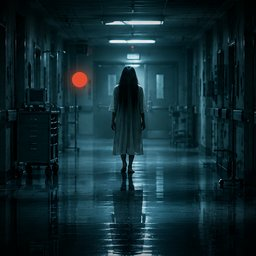

Pasillo 9
Juego de terror para Android. Eres Marcos, el vigilante nocturno del hospital San Gabriel, y la cámara 09 graba un pasillo que lleva doce años cerrado.
Política de privacidadEstudio independiente de videojuegos. Hacemos juegos pequeños con mucho ambiente.

Juego de terror para Android. Eres Marcos, el vigilante nocturno del hospital San Gabriel, y la cámara 09 graba un pasillo que lleva doce años cerrado.
Política de privacidad